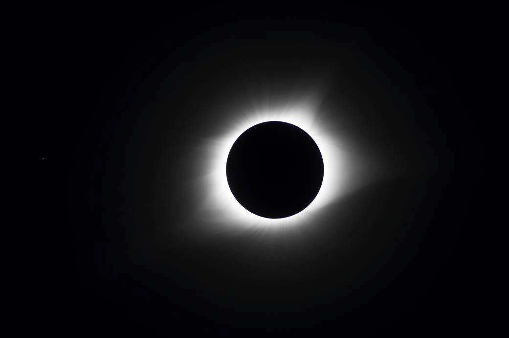
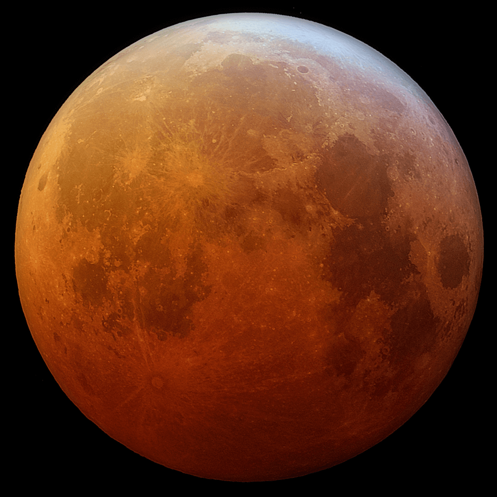

The Big Bang Theory

El Big Bang es cómo los astrónomos explican la forma en que comenzó el universo. Es la idea de que el universo comenzó como un solo punto, luego se expandió y se estiró para crecer tanto como lo es ahora, ¡y todavía se está extendiendo!
SuperNovas

Una supernova es la explosión más grande que los humanos hayan contemplado jamás. Todas las explosiones de las estrellas son extremadamente brillantes y superpoderosas.
Eclipses Solares Y Lunares
Un Eclipse Solar se produce cuando la luna se interpone en el camino de la luz del sol y proyecta su sombra en la Tierra. Eso significa que durante el día, la luna se mueve por delante del sol y se pone oscuro. ¿No es extraño que se ponga todo
oscuro en pleno día? Este eclipse total se produce aproximadamente cada año y medio en algún lugar de la Tierra. Un eclipse parcial, cuando la luna no recubre por completo al sol, se produce al menos dos veces por año, en algún lugar de la
Tierra.

Durante un eclipse lunar, la Tierra impide que la luz del sol llegue hasta la luna. Eso quiere decir que a la noche, la luna llena desaparece por completo, a medida que la sombra de la Tierra la cubre. La luna también puede parecer de un color
rojizo, debido a que la atmósfera terrestre absorbe los demás colores mientras se dobla algo de luz solar hacia la luna. Los atardeceres obtienen su color rojo y anaranjado debido a la forma en la que la luz del sol se dobla cuando atraviesa
la atmósfera y absorbe otros colores.